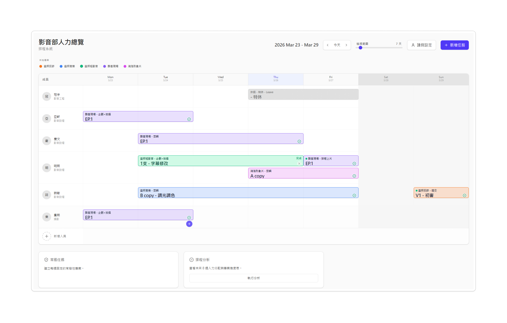

neurology
AI & Complex SystemsAI 與複雜系統
Designing for cognitive clarity. Breaking down data-heavy B2B databases and generative workflows into scenario-driven, frictionless interfaces.為認知清晰而設計。將數據密集的 B2B 資料庫與生成式工作流，轉化為場景驅動、零阻力的介面。
Currently a UI/UX designer who designs system, not just screen. 目前是一名 UI/UX 設計師，不只設計介面，更在於建造系統（老闆稱我為建築師 ᕦ(ò_óˇ)ᕤ 🚧）
What I do我專注於
I translate human psychology into rigorous systemic logic. 我把人性心理，轉化為嚴謹的系統邏輯。
Designing for cognitive clarity. Breaking down data-heavy B2B databases and generative workflows into scenario-driven, frictionless interfaces.為認知清晰而設計。將數據密集的 B2B 資料庫與生成式工作流，轉化為場景驅動、零阻力的介面。
Systems beyond screens. Translating human ergonomics into intuitive spatial workflows. Specialist in architecting multi-dimensional and interactive experiences for Apple Vision Pro and Meta Quest.超越螢幕的系統設計。將人因工程轉化為直覺的空間工作流。為 Apple Vision Pro 與 Meta Quest 架構多維度人機互動體驗。
Parsing behavior into logic. Utilizing rigorous qualitative and quantitative testing to guide product scoping.將行為解析為邏輯。利用嚴密的質性與量化測試，引導產品範疇收斂。
Selected work精選作品

Rescuing managers from the nightmare of multi-tab Excel hell.將主管從多分頁的 Excel 地獄噩夢中解救出來。

A mixed-reality museum on Vision Pro, published at IEEE GEM 2025.Vision Pro 上的混合實境博物館，研究論文發表於 IEEE GEM 2025。